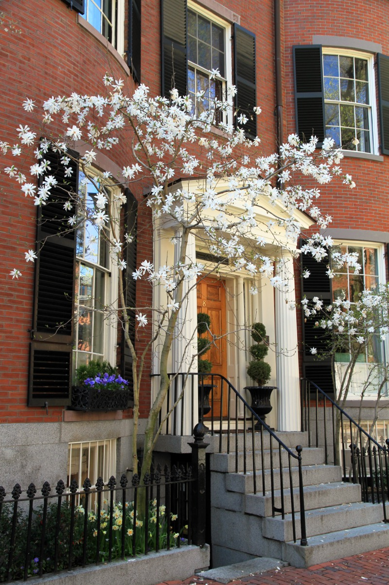
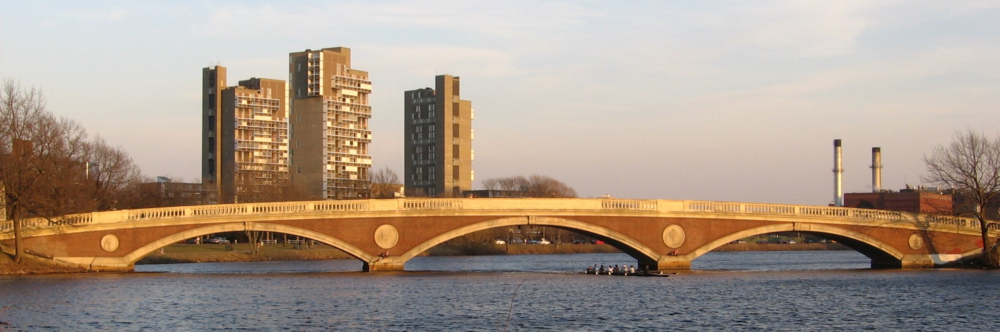

Four walking routes through Boston, each with seven specific things to find: a weathervane, a footbridge, a statue's shoe. Each is 1.5 to 2.5 miles and takes 90 minutes to two and a half hours. For visitors who want structure without a tour, and locals who want a reason to walk.
The short answer
The Boston city game in eight steps
01
How the game works
Each route starts and ends at a T stop and has seven stops in walking order: landmarks, photo spots and details most people walk past. A stop counts when you are there and have seen the thing. Tick it off in the app or take a photo. More routes on the challenges hub.
02
Route 1: Downtown and the Freedom Trail core
Start at Park Street. 1.5 miles, 90 minutes to two hours. For all 16 stops, use the Freedom Trail challenge.
Brewer Fountain and the start of the red line
Find where the red brick line begins, by the Visitor Center at 139 Tremont Street.
The gold dome of the State House

Photo stop: the gilded dome framed by the Common's trees. Across Beacon Street, find the Shaw Memorial relief.
Granary Burying Ground

Revere, Adams and Hancock are here. Find the stone of Mary Goose, sometimes claimed as Mother Goose.
The Franklin statue and the school mosaic

Site of Boston Latin, the country's first public school. Find the sidewalk mosaic most people step over.
Old State House and the Massacre ring

Find the lion and unicorn on the gable. Then stand on the cobblestone ring in the traffic island at State and Congress.
The grasshopper on Faneuil Hall

Look up from the Dock Square side for the gilded weathervane, up since 1742. Quincy Market next door is the food stop.
Long Wharf and the harbor

Walk to the end of the wharf. Finish here, or continue into Route 3.
03
Route 2: Back Bay and Beacon Hill
Start at Charles/MGH. 2.5 miles, two to two and a half hours. Best for photos; weekday evenings are quietest.
Acorn Street

Up Charles Street past the gas lamps, then Chestnut and West Cedar. Shoot the cobblestone lane from the bottom.
Louisburg Square

A private oval ringed by the city's most expensive houses. Find the bow-fronted houses on the west side.
The purple windows on Beacon Street
A few panes turned lavender because of a flaw in 1820s English glass. Find them from the sidewalk with the sun behind you.
The Ducklings in the Public Garden
Mrs Mallard and eight bronze ducklings. Name all eight (Jack to Quack), then cross the lagoon on the tiny suspension bridge.
Commonwealth Avenue Mall

Find the Boston Women's Memorial between Fairfield and Gloucester: three bronze figures at street level.
Trinity Church reflected in the Hancock tower

Photo stop: the 1877 church reflected in 200 Clarendon. Stand on the Boylston Street side for the cleanest reflection.
Bates Hall at the Boston Public Library

Up the marble stairs to the reading room with the green lamps. Finish along Newbury Street to Hynes.
04
Route 3: Seaport and the Harborwalk
Start at Aquarium. 2.5 miles, two hours, flat. Best before sunset. More in our Seaport guide.
Long Wharf and the Custom House tower
From the end of the wharf, look back up State Street. Find the clock face on the 1915 tower.
Christopher Columbus Park trellis
Find the 260-foot wisteria trellis, lit blue in winter. Look up the harbor for the Zakim Bridge.
Rowes Wharf arch
Photo stop: the Boston Harbor Hotel arch framing the harbor from Atlantic Avenue.
The Tea Party ships from the Congress Street bridge
The replica tea ships are moored below the bridge, no ticket needed. Find the giant milk bottle opposite, outside the Children's Museum.
Fan Pier Park

Around the water side of the courthouse to the tip. The best close-up skyline view in the city, best after dark.
The ICA and its harbor steps

A glass box over the harbor. Sit on the outdoor grandstand steps facing the water, open without a ticket.
Seaport Common and Harbor Way

Finish on the lawn and pedestrian Harbor Way, usually with public art or a market. Silver Line back to South Station.
05
Route 4: Cambridge and Harvard Square
Start at Harvard. 2 miles, two hours. Best after 5pm or Sunday morning. More in our Harvard Square guide.
The John Harvard statue and its three lies

Not the founder, wrong date, and the face is a student's. Find the shiny left shoe, rubbed for luck.
Widener Library steps
You cannot go in, but the steps are the best seat in the Yard. Photo stop: Memorial Church across the lawn.
Harvard Art Museums

Out the east side of the Yard. Find the central courtyard under the Renzo Piano glass roof.
Harvard Book Store basement
On the square since 1932. Find the used-book basement and buy something small.
Grolier Poetry Book Shop
A one-room poetry bookshop off Mass Ave, open since 1927. Small enough to miss, which is why it is a stop.
Weeks Footbridge

Down DeWolfe Street to the arched brick footbridge. Stand in the middle for the river both ways.
The Lampoon castle
A small castle whose front looks like a face. Find the face. Harvard station is three minutes away.
06
The four routes at a glance
Times assume a normal pace with photos; add 30 to 45 minutes for a meal.
| Route | Stops | Distance | Time | Start T stop | End T stop | Best time |
|---|---|---|---|---|---|---|
| 1. Downtown & Freedom Trail core | 7 | 1.5 miles | 90 min – 2 hrs | Park Street (Red/Green) | Aquarium (Blue) | Weekday morning |
| 2. Back Bay & Beacon Hill | 7 | 2.5 miles | 2 – 2.5 hrs | Charles/MGH (Red) | Hynes (Green) | Weekday evening |
| 3. Seaport & Harborwalk | 7 | 2.5 miles | About 2 hrs | Aquarium (Blue) | Courthouse (Silver) | Two hours before sunset |
| 4. Cambridge & Harvard Square | 7 | 2 miles | About 2 hrs | Harvard (Red) | Harvard (Red) | After 5pm, or Sunday morning |
Routes 1 and 3 join at Long Wharf and make one full day. See the one-day itinerary.
07
Playing with friends or solo
Three to six people is the sweet spot. Solo is faster: about 70 percent of the group time.
- Give people jobs: one navigator, one reader, one photographer. Rotate at the food stop.
- Race it: two teams start from opposite ends and meet in the middle; the loser buys the round.
- Plan the end: pick drinks in advance. More in things to do with friends.
- Keep the app on one phone so the group has a single record.
- Solo, eat at counters: Quincy Market, Trident, the Seaport food trucks. See things to do alone.
- New to Boston? Do one route a week for four weeks.
FAQ
Boston city game: common questions
What is a Boston city exploration game?
A self-guided walk through one neighborhood with specific stops to find. Tick each off as you reach it. All four routes are in the no bad days club app.
How long does each route take?
90 minutes to two and a half hours. Downtown is shortest at 1.5 miles; Back Bay and Beacon Hill is longest at 2.5 miles. Add 30 to 45 minutes for food.
Does the game cost anything?
No. Every stop is free to see from outside. You only pay for transit, food and any admission you choose.
Which route should you do first?
Downtown for a first visit. Back Bay and Beacon Hill for photos. Seaport for a flat walk at dusk. Cambridge if you are near Harvard.
Is the Boston city game suitable for kids?
Downtown and Back Bay are best: flat, stroller-friendly, with things to spot like the Ducklings, the gold dome and the Faneuil Hall grasshopper. One route per day.